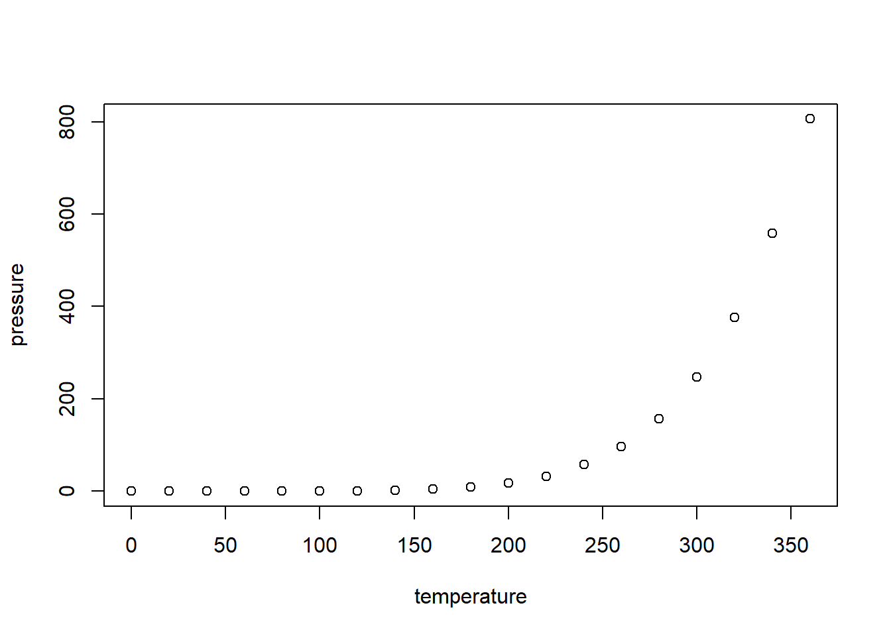

title: “Sample study” author: “Sree Sankar” date: "" output: html_document —
Let the kerala network is stored in the variable name “nw”
nw<-kerala_network summary(nw)
## Network attributes:
## vertices = 100
## directed = TRUE
## hyper = FALSE
## loops = FALSE
## multiple = FALSE
## bipartite = FALSE
## title = comm9.net
## total edges= 190
## missing edges= 0
## non-missing edges= 190
##
## Vertex attribute names:
## age gender vertex.names
##
## Edge attribute names not shownplot(Kerala_network)
age_nw<- nw %v% 'age'
gender_nw<- nw %v% 'gender'
plot(nw,vertex.cex=age_nw/20,vertex.col=gender_nw)The bar ploat
The degree ploat
Now to study the “egrm”
##
## ==========================
## Summary of model fit
## ==========================
##
## Formula: nw ~ edges
##
## Iterations: 7 out of 20
##
## Monte Carlo MLE Results:
## Estimate Std. Error MCMC % z value Pr(>|z|)
## edges -3.93389 0.07325 0 -53.7 <1e-04 ***
## ---
## Signif. codes: 0 '***' 0.001 '**' 0.01 '*' 0.05 '.' 0.1 ' ' 1
##
## Null Deviance: 13724 on 9900 degrees of freedom
## Residual Deviance: 1879 on 9899 degrees of freedom
##
## AIC: 1881 BIC: 1888 (Smaller is better.)How to interpret this model?
model_k1##
## MLE Coefficients:
## edges
## -3.934The log-odds of any tie occurring is:
= -3.93389 × change in the number of ties = -3.93389 × 1 for all ties, since the addition of any tie to the network changes the number of ties by 1! Corresponding probability is:
exp(-3.93389)/(1 + exp(-3.93389))
= 0.01919
which is what you would expect, since there are 190 in our network out of the total possible 9900 ties; i.e 190/9900
## Warning: `set_attrs()` is deprecated as of rlang 0.3.0
## This warning is displayed once per session.##
## ==========================
## Summary of model fit
## ==========================
##
## Formula: nw ~ edges + nodefactor("gender")
##
## Iterations: 7 out of 20
##
## Monte Carlo MLE Results:
## Estimate Std. Error MCMC % z value Pr(>|z|)
## edges -3.89874 0.12259 0 -31.803 <1e-04 ***
## nodefactor.gender.2 -0.03695 0.10430 0 -0.354 0.723
## ---
## Signif. codes: 0 '***' 0.001 '**' 0.01 '*' 0.05 '.' 0.1 ' ' 1
##
## Null Deviance: 13724 on 9900 degrees of freedom
## Residual Deviance: 1878 on 9898 degrees of freedom
##
## AIC: 1882 BIC: 1897 (Smaller is better.)Yes, there is a significant negative gender effect on the probability of a tie.
model_k2.1 <- ergm(nw~ edges + nodematch("age", diff = TRUE))
summary(model_k2.1)##
## ==========================
## Summary of model fit
## ==========================
##
## Formula: nw ~ edges + nodematch("age", diff = TRUE)
##
## Iterations: 7 out of 20
##
## Monte Carlo MLE Results:
## Estimate Std. Error MCMC % z value Pr(>|z|)
## edges -4.08502 0.08022 0 -50.921 < 1e-04 ***
## nodematch.age.8 -Inf 0.00000 0 -Inf < 1e-04 ***
## nodematch.age.9 2.47558 1.09838 0 2.254 0.02421 *
## nodematch.age.10 -Inf 0.00000 0 -Inf < 1e-04 ***
## nodematch.age.11 -Inf 0.00000 0 -Inf < 1e-04 ***
## nodematch.age.12 -Inf 0.00000 0 -Inf < 1e-04 ***
## nodematch.age.13 2.78574 0.33540 0 8.306 < 1e-04 ***
## nodematch.age.14 -Inf 0.00000 0 -Inf < 1e-04 ***
## nodematch.age.15 -Inf 0.00000 0 -Inf < 1e-04 ***
## nodematch.age.16 3.39187 0.61760 0 5.492 < 1e-04 ***
## nodematch.age.17 2.47558 0.77874 0 3.179 0.00148 **
## nodematch.age.18 2.47558 0.77874 0 3.179 0.00148 **
## nodematch.age.20 -Inf 0.00000 0 -Inf < 1e-04 ***
## nodematch.age.21 -Inf 0.00000 0 -Inf < 1e-04 ***
## nodematch.age.22 1.68712 1.04754 0 1.611 0.10728
## nodematch.age.23 -Inf 0.00000 0 -Inf < 1e-04 ***
## nodematch.age.24 -Inf 0.00000 0 -Inf < 1e-04 ***
## nodematch.age.25 -Inf 0.00000 0 -Inf < 1e-04 ***
## nodematch.age.26 1.08929 0.72900 0 1.494 0.13512
## nodematch.age.27 -Inf 0.00000 0 -Inf < 1e-04 ***
## nodematch.age.28 -Inf 0.00000 0 -Inf < 1e-04 ***
## nodematch.age.29 -Inf 0.00000 0 -Inf < 1e-04 ***
## nodematch.age.30 -Inf 0.00000 0 -Inf < 1e-04 ***
## nodematch.age.31 -Inf 0.00000 0 -Inf < 1e-04 ***
## nodematch.age.32 1.68712 1.04754 0 1.611 0.10728
## nodematch.age.33 1.14058 1.02911 0 1.108 0.26773
## nodematch.age.34 2.47558 0.77874 0 3.179 0.00148 **
## nodematch.age.36 1.52007 0.60449 0 2.515 0.01192 *
## nodematch.age.37 4.08502 1.41649 0 2.884 0.00393 **
## ---
## Signif. codes: 0 '***' 0.001 '**' 0.01 '*' 0.05 '.' 0.1 ' ' 1
##
## Null Deviance: 13724 on 9900 degrees of freedom
## Residual Deviance: 1935 on 9871 degrees of freedom
##
## AIC: 1993 BIC: 2202 (Smaller is better.)
##
## Warning: The following terms have infinite coefficient estimates:
## nodematch.age.8 nodematch.age.10 nodematch.age.11 nodematch.age.12 nodematch.age.14 nodematch.age.15 nodematch.age.20 nodematch.age.21 nodematch.age.23 nodematch.age.24 nodematch.age.25 nodematch.age.27 nodematch.age.28 nodematch.age.29 nodematch.age.30 nodematch.age.31from this result the people of age 16 and 37 tend to intract with each other more. And there are coefficients estimated as -Inf these is becouse people form no homophilous (within-group) ties.
##
## ==========================
## Summary of model fit
## ==========================
##
## Formula: nw ~ edges + nodecov("age")
##
## Iterations: 6 out of 20
##
## Monte Carlo MLE Results:
## Estimate Std. Error MCMC % z value Pr(>|z|)
## edges -3.015101 0.269480 0 -11.189 < 1e-04 ***
## nodecov.age -0.021167 0.006181 0 -3.424 0.000616 ***
## ---
## Signif. codes: 0 '***' 0.001 '**' 0.01 '*' 0.05 '.' 0.1 ' ' 1
##
## Null Deviance: 13724 on 9900 degrees of freedom
## Residual Deviance: 1867 on 9898 degrees of freedom
##
## AIC: 1871 BIC: 1885 (Smaller is better.)-0.021167 shows that the intrection between the people in different age is less.
Here we try to stimulate random exponential graph wth coefficent calculated from egrm. First lest try for simple model by considering the coeffecrnt of the edge:
model_k1.sim <- simulate(model_k1,nsim=3)we have stimulated 3 random graph they are
## Network attributes:
## vertices = 100
## directed = TRUE
## hyper = FALSE
## loops = FALSE
## multiple = FALSE
## bipartite = FALSE
## title = comm9.net
## total edges= 205
## missing edges= 0
## non-missing edges= 205
##
## Vertex attribute names:
## age gender vertex.names
##
## No edge attributes## Network attributes:
## vertices = 100
## directed = TRUE
## hyper = FALSE
## loops = FALSE
## multiple = FALSE
## bipartite = FALSE
## title = comm9.net
## total edges= 179
## missing edges= 0
## non-missing edges= 179
##
## Vertex attribute names:
## age gender vertex.names
##
## No edge attributes## Network attributes:
## vertices = 100
## directed = TRUE
## hyper = FALSE
## loops = FALSE
## multiple = FALSE
## bipartite = FALSE
## title = comm9.net
## total edges= 173
## missing edges= 0
## non-missing edges= 173
##
## Vertex attribute names:
## age gender vertex.names
##
## No edge attributesLets try the egrm for a large sample size of 30000
## Sample statistics summary:
##
## Iterations = 16384:4209664
## Thinning interval = 1024
## Number of chains = 1
## Sample size per chain = 4096
##
## 1. Empirical mean and standard deviation for each variable,
## plus standard error of the mean:
##
## Mean SD Naive SE Time-series SE
## edges -3.114 15.647 0.24448 0.7461
## mutual -1.917 6.034 0.09428 0.3688
## nodematch.gender -2.885 12.643 0.19755 0.6567
## absdiff.age -4.125 77.722 1.21441 2.2896
##
## 2. Quantiles for each variable:
##
## 2.5% 25% 50% 75% 97.5%
## edges -34.0 -14 -3.0 8 27
## mutual -14.0 -6 -2.0 2 10
## nodematch.gender -28.0 -11 -3.0 6 21
## absdiff.age -166.6 -56 -1.5 49 140
##
##
## Sample statistics cross-correlations:
## edges mutual nodematch.gender absdiff.age
## edges 1.0000000 0.7415515 0.7869941 0.7013354
## mutual 0.7415515 1.0000000 0.6211710 0.3961903
## nodematch.gender 0.7869941 0.6211710 1.0000000 0.5515828
## absdiff.age 0.7013354 0.3961903 0.5515828 1.0000000
##
## Sample statistics auto-correlation:
## Chain 1
## edges mutual nodematch.gender absdiff.age
## Lag 0 1.0000000 1.0000000 1.0000000 1.0000000
## Lag 1024 0.5477378 0.8589355 0.6192639 0.2798268
## Lag 2048 0.4577305 0.7440765 0.5234336 0.2016072
## Lag 3072 0.4088207 0.6502033 0.4626111 0.1902924
## Lag 4096 0.3558751 0.5751566 0.4259728 0.1439806
## Lag 5120 0.3154188 0.5072496 0.3745489 0.1247927
##
## Sample statistics burn-in diagnostic (Geweke):
## Chain 1
##
## Fraction in 1st window = 0.1
## Fraction in 2nd window = 0.5
##
## edges mutual nodematch.gender absdiff.age
## 0.7782 0.5809 1.2684 0.0780
##
## Individual P-values (lower = worse):
## edges mutual nodematch.gender absdiff.age
## 0.4364370 0.5612867 0.2046491 0.9378318
## Joint P-value (lower = worse): 0.3463779 .##
## MCMC diagnostics shown here are from the last round of simulation, prior to computation of final parameter estimates. Because the final estimates are refinements of those used for this simulation run, these diagnostics may understate model performance. To directly assess the performance of the final model on in-model statistics, please use the GOF command: gof(ergmFitObject, GOF=~model).##
## ==========================
## Summary of model fit
## ==========================
##
## Formula: nw ~ edges + mutual + nodematch("gender") + absdiff("age")
##
## Iterations: 2 out of 20
##
## Monte Carlo MLE Results:
## Estimate Std. Error MCMC % z value Pr(>|z|)
## edges -3.4045 0.1468 0 -23.189 < 1e-04 ***
## mutual 3.2944 0.2571 0 12.814 < 1e-04 ***
## nodematch.gender 0.4058 0.1289 0 3.149 0.00164 **
## absdiff.age -0.1822 0.0187 0 -9.741 < 1e-04 ***
## ---
## Signif. codes: 0 '***' 0.001 '**' 0.01 '*' 0.05 '.' 0.1 ' ' 1
##
## Null Deviance: 13724 on 9900 degrees of freedom
## Residual Deviance: 1522 on 9896 degrees of freedom
##
## AIC: 1530 BIC: 1558 (Smaller is better.)m1_k.gof <- gof(m1_k)
plot(m1_k.gof)title: “kerala” author: “sree” date: “29 May 2020” output: html_document —
This is an R Markdown document. Markdown is a simple formatting syntax for authoring HTML, PDF, and MS Word documents. For more details on using R Markdown see http://rmarkdown.rstudio.com.
When you click the Knit button a document will be generated that includes both content as well as the output of any embedded R code chunks within the document. You can embed an R code chunk like this:
summary(cars)## speed dist
## Min. : 4.0 Min. : 2.00
## 1st Qu.:12.0 1st Qu.: 26.00
## Median :15.0 Median : 36.00
## Mean :15.4 Mean : 42.98
## 3rd Qu.:19.0 3rd Qu.: 56.00
## Max. :25.0 Max. :120.00You can also embed plots, for example:

Note that the echo = FALSE parameter was added to the code chunk to prevent printing of the R code that generated the plot.